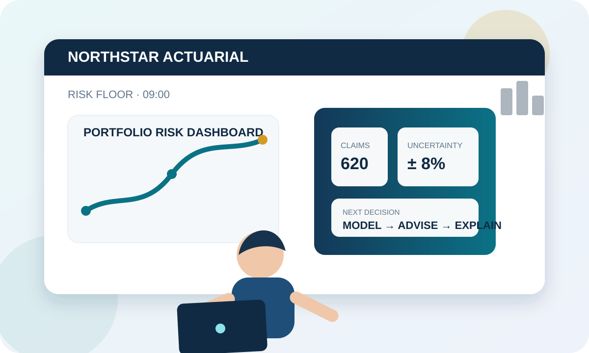

ACTUARY FOR A DAY
Can you survive your first morning?
You have just joined an actuarial consultancy. Complete six short missions to discover what actuaries actually do, practise essential terminology and fix the pronunciation of key professional words.
- 6 immersive missions
- British-English pronunciation practice
- Risk, data and decision-making vocabulary
- 60-second final speaking challenge